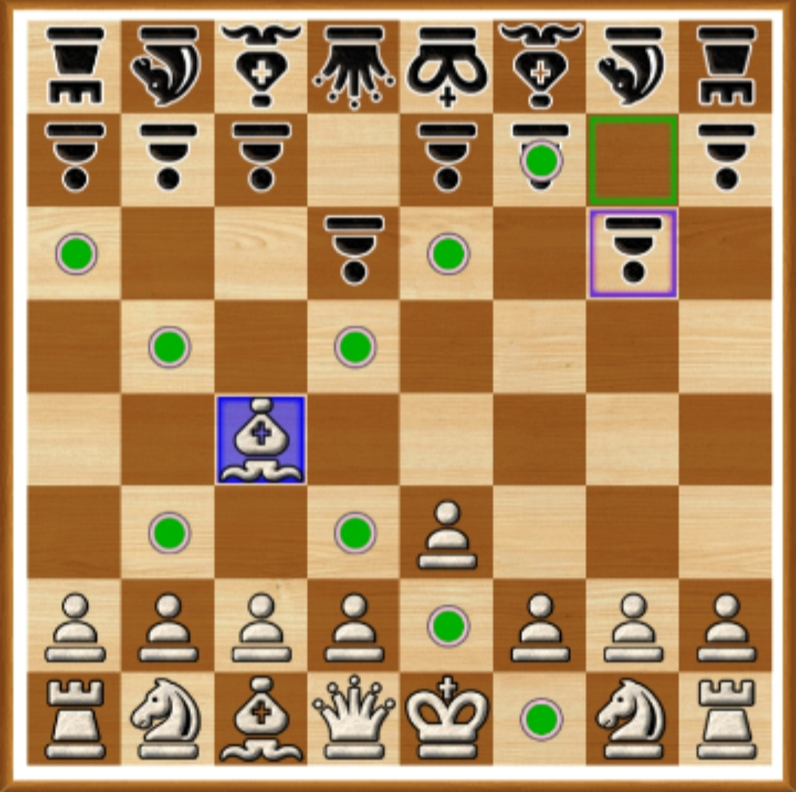

西洋棋的起源
西洋棋的起源眾說紛紜，但較可信的說法是源自於印度2到4世紀出現的恰圖蘭加，隨後傳入阿拉伯國家。 在9世紀又由阿拉伯國家傳入歐洲國家，而在11世紀時甚至成為騎士七技之一， 並在傳遞的過程中逐漸變成如今的西洋棋。
西洋棋的規則
在8×8的棋盤中，擺法如下圖，白棋的一方先動，最先吃掉敵方國王的一方獲勝。
西洋棋各種棋子介紹
士兵
未移動的士兵可以前一次移動兩格
如果士兵移動後，只能再往前一格或是攻擊斜前方的棋子。只有士兵的移動和攻擊位置有所不同
騎士
騎士的移動路徑是從原本的位置移動到3×2或2×3長方形的斜對角
城堡
城堡的移動路徑是往前後左右無限延伸，不能越過其他棋子。
主教
主教的移動路徑是往斜前斜後方無限延伸，不能越過其他棋子。值得注意的是， 分為白格主教和黑格主教，他們各自只能在白格和黑格中移動。
皇后
皇后的移動路徑就等同於城堡加上主教，它是攻擊力最強大的棋子。
國王
國王的移動路徑是往四面八方移動一格，它是最重要的旗子。
西洋棋的特殊規則
吃路過兵
當一方尚未動過的士兵往前移動兩格，而另一方的士兵恰巧在對方剛剛移動兩格士兵的左右，那麼另一方的士兵就可以往斜前方移動吃掉敵方的士兵
升變
當一方的士兵走到另一方棋盤的邊界，那麼士兵可以選擇變成騎士、城堡、主教、皇后，但不能不變或是變成國王。
入堡
國王和城堡中間沒有棋子阻隔，且路徑上不是敵方的攻擊範圍，加上當下沒有被將軍，還有國王和那個城堡都尚未移動過，那國王和城堡就可以交換位置。
西洋棋的技巧
雙捉
移動一個棋，使敵方的兩個棋都在你剛剛移動的棋的攻擊路徑上。
閃擊
移動一個棋往前進攻，同時也因為那個棋移走，使後方被阻擋的棋可以攻擊敵方的棋。
西洋棋的小知識
皇后為何這麼強？
在印度和阿拉伯時，皇后只能斜進一格，為甚麼到了歐洲就變得那麼強？較可信的說法有兩個。
1.第一個說法是當時歐洲有相當多的女性強權，而且都是手腕強硬的統治者， 西洋棋也受其影響，皇后這個棋子也被加強。最後隨著這個新規則隨著宗教和哥倫布開啟的大航海時代傳播到世界各地。
2.當時不少歐洲國家靠聯姻來互相結盟，所以皇后代表的是政治力量和兵力。
城堡為什麼可以橫衝直撞？
波斯時那個旗子指的是攻城用的高台戰車，但到了歐洲就誤傳成了城堡。